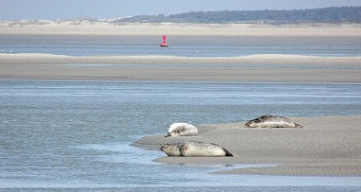
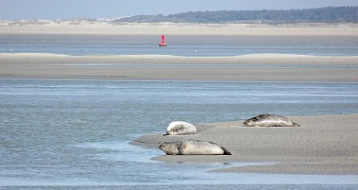

La Picardie est une région du nord de la France s'étendant du nord de la banlieue parisienne et des vignes de la Champagne aux plages de la baie de Somme au bord de la Manche. Amiens, sa capitale, est une ville universitaire réputée pour sa cathédrale gothique, les jardins flottants sur ses canaux et la Maison de Jules Verne, ancienne demeure du XIXe siècle du célèbre romancier d'aventure, aujourd'hui devenue un musée.
Découvrez les plus beaux lieux touristiques en Picardie.Des Musées à découvrir tels que le Musée Antoine Lecuyer à ST Quentin ou le Musée de la résistance à Tergnier, des châteaux à surtout ne pas manquer tels que le château de Pierrefonds, le château de Coucy ou de Compiègne et bien d'autres choses à faire près de chez vous...
Sortir ce mois ci..
Lien vers le musée de la résistance de Tergnier